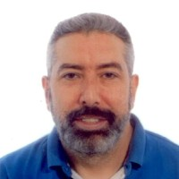

About me
En esta página podrás conocer un poco más sobre mí.
Descripción personal
Dr. David Buján Carballal compagina su labor de profesor en la Facultad de Ingeniería de la Universidad de Deusto impartiendo asignaturas relacionadas con Ingeniería Web, Sistemas Operativos y Sistemas Distribuidos, con sus tareas de investigación en los proyectos del grupo Mobile Communications Research Group (MORElab: envisioning future internet), en el centro de investigación DeustoTech – Deusto Institute of Technology y en la Cátedra Telefónica Deusto. Sus principales áreas de investigación son Blockchain, Cloud computing y Grid computing en el ámbito de los recursos y sistemas distribuidos, así como Linked Data (Web of Data), Social Web y Semantic Web en el ámbito de las tecnologías web y semánticas. Es Ingeniero en Informática (2000) por la Universidad de Deusto, tiene un máster en e-Business (2001) y un doctorado en ciencias de la computación (2016) por la misma universidad.
Estudios realizados
- E.G.B. en Salesianos de Cruces-Barakaldo
- B.U.P. en Salesianos de Urnieta
- C.O.U. en Salesianos de Santander
- Ingeniería Informática en la Universidad de Deusto
Gustos y aficiones
FIRST Lego League Euskadi Deusto 2020
FIRST Lego League Euskadi Deusto 2022
FIRST Lego League Euskadi Deusto 2023
Experiencia laboral
Su tesis se enmarcó en el área de la Semantic Grid y lleva por título "Nuevas capacidades en el descubrimiento de recursos grid basadas en tecnologías semánticas". Participa en la red Alastria y en otras redes nacionales de investigación reconocidas por el MEC y el MICIIN. Igualmente ha formado parte de Comités de Organización y Comités de Programa de varias conferencias internacionales (HAIS-2021, SOCO-2021, CISCI-2021, ICEUTE-2021, IoT-2019, CAEPIA-2011, JENUI-2006). Es autor de varias comunicaciones en reuniones científicas nacionales e internacionales, así como de artículos en revistas, ponencias y capítulos de libro, y revisor en varias conferencias internacionales. Ha colaborado en varios proyectos de investigación de ámbito nacional e internacional, así como en proyectos bajo demanda para la empresa privada. Profundizó su experiencia en tecnologías semánticas y web 2.0 durante su estancia en el Information Management Group de la Universidad de Manchester, así como en Grid y Cloud computing gracias a sus visitas a varios centros nacionales e internacionales de referencia, como son: UCM, CESGA, IFCA, University of Westminster. Más información aquí.